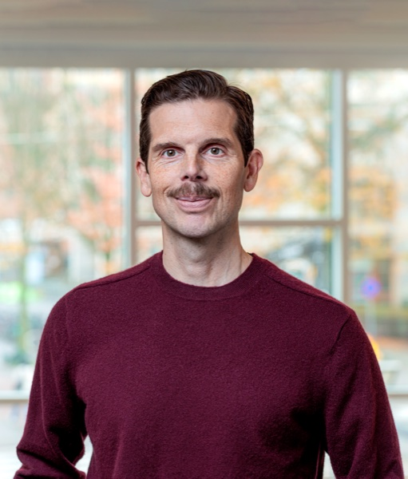

Trust & community
Institutional and interpersonal trust, social identity, and the experiences of residents in vulnerable neighborhoods.
Explore publications ↗
Jacob Sohlberg
Associate Professor
University of Gothenburg
I’m Jacob Sohlberg, a political scientist studying public opinion, political psychology, and the relationships between people, communities, and institutions.
01 / Research
My research examines how experiences, identities, and information shape political attitudes and behavior. One thread asks how people respond to sudden crises, such as terrorist attacks and pandemics, and to ongoing insecurity in less safe neighborhoods.
Institutional and interpersonal trust, social identity, and the experiences of residents in vulnerable neighborhoods.
Explore publications ↗Political psychology, electoral choices, environmental behavior, and the measurement of public opinion.
Explore publications ↗Responses to terrorism and the pandemic, journalistic uncertainty, and trust in times of crisis.
Explore publications ↗Featured project · 2022–2026
The Future of Diverse and Disadvantaged Neighborhoods in the Nordic Welfare States — The Voices of Residents.
Related research ↗02 / Selected publications
Political Geography.
Read article In the media: SvD op-ed ↗Journal of Environmental Psychology.
Read article In the news: selected coverage ↗Political Psychology, 46(2), 435–454.
Read articleEuropean Journal of Political Research, 64(2), 744–766.
Read article03 / Research in the news
Selected coverage of my research with Peter Esaiasson on how disgust sensitivity shapes waste disposal behavior.
The research behind the headlines
Our studies in Sweden, Finland, and Denmark examine how dirty waste disposal environments and sensitivity to disgust influence disposal behavior. The findings point to the importance of keeping shared waste facilities clean and well maintained.
Jacob Sohlberg & Peter Esaiasson
Journal of Environmental Psychology · 2026
Swedish news coverage · TT article
Radio report · Listen and read in Swedish
Swedish research news · Based on university news
Industry coverage · Source: University of Gothenburg
Science news · Article provided by University of Gothenburg
04 / Research in the media
An op-ed following our Political Geography article on how residents experience their neighborhoods.
The research behind the debate
Our research compares how residents in vulnerable neighborhoods understand their living conditions with perceptions in the wider population. The findings show why residents’ own experiences should inform public discussion and policy.
Peter Esaiasson, Jacob Sohlberg and colleagues
Political Geography · 2026
Op-ed · Read in Swedish
05 / Teaching & supervision
I teach across undergraduate, master’s, and doctoral levels, with experience in course coordination, curriculum development, and thesis supervision.
Since 2026, I am director of studies for future grade 7–9 and upper-secondary school teachers in the social sciences.
Full teaching experience ↗PhD supervision
University of Gothenburg
September 2020–May 2024
University of Gothenburg · 2021–2026
University of Gothenburg · 2023–2026
University of Gothenburg · 2020–2025